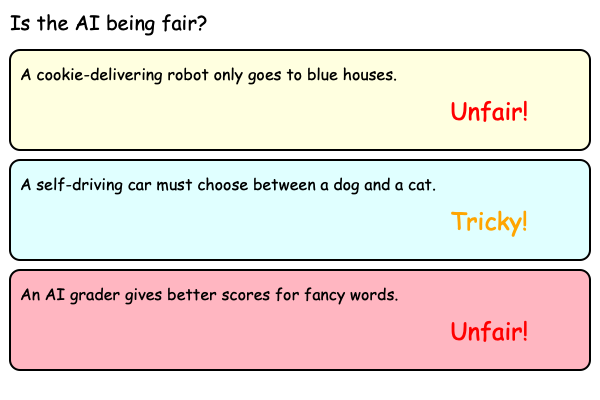

Using AI Responsibly
AI is a very powerful tool, so it's important to think about how we use it. Just like we learn to be kind and fair to other people, we need to make sure that the AI we create is fair and helpful to everyone.
What's it all about?
AI ethics is all about thinking about what is right and wrong when we use AI. One important idea is **fairness**. We need to make sure that AI treats everyone equally. For example, if an AI is helping doctors diagnose diseases, it should work well for everyone, no matter where they are from or what they look like.
Another important idea is **bias**. AI learns from the information we give it. If that information is biased, then the AI can become biased too. For example, if we only show an AI pictures of doctors who are men, it might think that only men can be doctors. We need to be careful to give AI good and fair information so it doesn't learn our own biases.
Real-World Applications
- Hiring: Some companies use AI to help them hire people. It's important that these AIs are fair and don't discriminate against certain groups of people.
- Self-Driving Cars: If a self-driving car is in a difficult situation, it might have to make a choice. Who decides what the car should do? These are tough questions that people who work on AI ethics think about.
- Social Media: The videos and posts that you see on social media are often chosen by an AI. It's important that these AIs show you a variety of different things and don't just show you things that make you angry or sad.
🤔 Fair or Unfair? 🤔
Let's think about some different situations and decide if the AI is being fair or unfair.

Scenarios:
- A robot is programmed to deliver cookies, but it only delivers them to houses that are painted blue. Is that fair?
- A self-driving car is trying to decide what to do. There is a dog in the road and a cat on the sidewalk. Should it swerve to avoid the dog, even if it means it might hit the cat?
- An AI is helping a teacher grade homework. The AI gives better grades to students who use fancy words. Is that fair?
What do you think? There are no easy answers! These are the kinds of questions that people who work in AI ethics think about every day.
🏡 Back to All Lessons